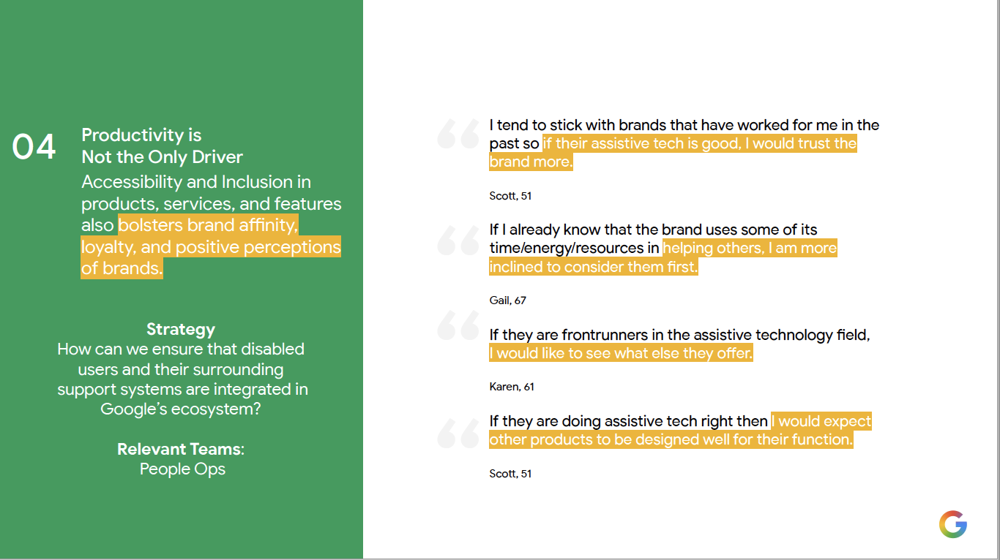
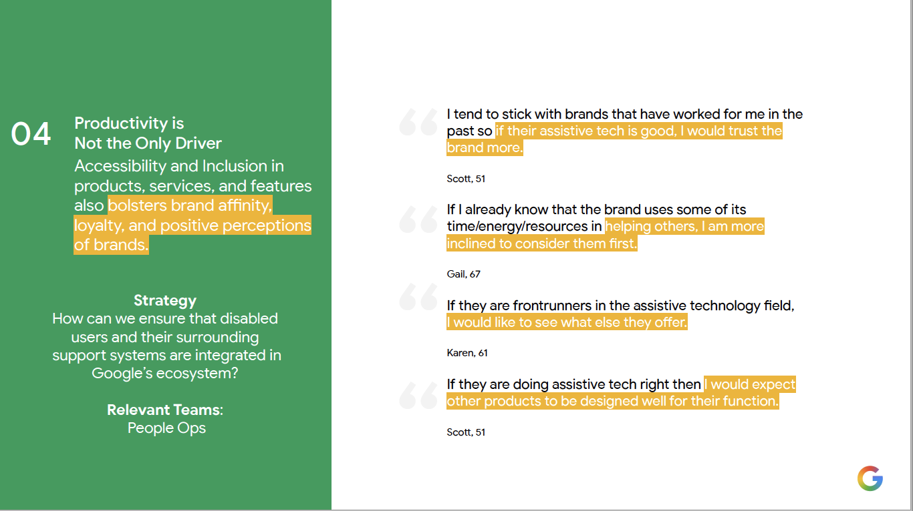

Building accessible infrastructure through research, design, product positioning strategy to enhance disabled user experiences.

Role
Associate Product Marketing Manager
Responsibilities
Disabled User Research
Stakeholder Management
UX/UI Design
Product Strategy
Messaging & Positioning
When I joined Google as an Associate Product Marketing Manager, I focused on disabled user research. Disabled users are consistently under-resourced and misrepresented in technology and in the world at large and cross-functional teams lacked the research and strategy necessary to better understand disabled user needs and create tools and optimizations to provide solutions.
I conducted research with a focus group of 150+ disabled users to understand their favorability among Big Tech brands, how assistive technologies can be augemented to better service their needs, and how to enhance their representation in the media landscape. Along with this, I communicated findings to cross-functional stakeholders and worked with Google Maps and Google Workspace to design and position product accessibility features and messaging to help disabled users.
This resulted in four reports research reports, a comprehensive disability stakeholder map, a disabled user playbook, an up-to-date audience research page, and a Google Maps feature that highlights accessible infrastructure (i.e. subway elevators) in metropolitan areas.


 


created with
Website Builder .